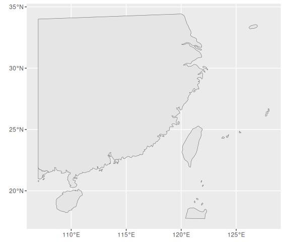
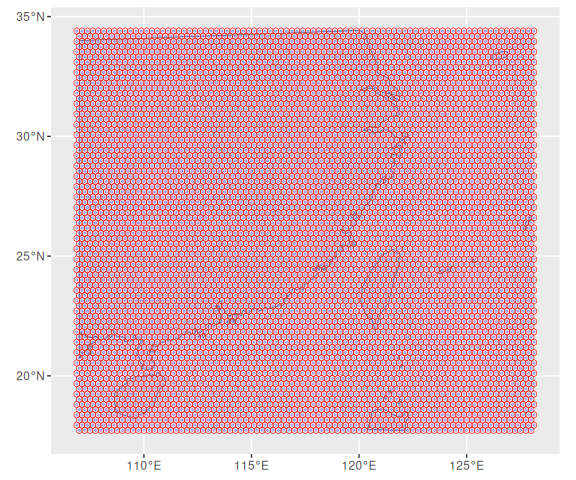
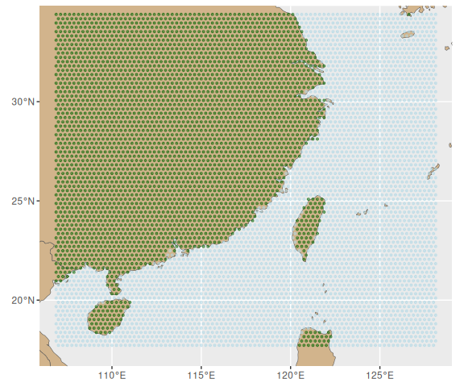
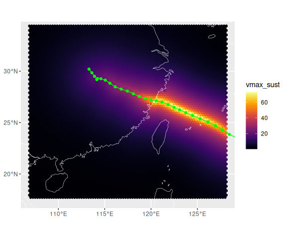
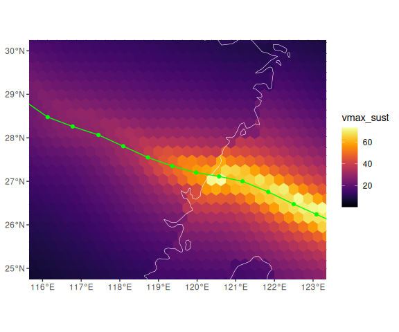
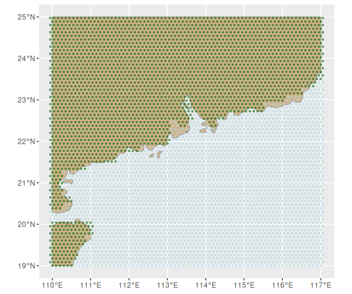
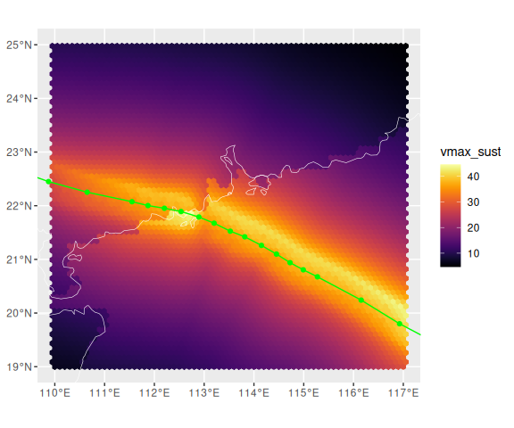

Modeling storm winds outside the United States
Source:vignettes/modeling_outside_us.Rmd
modeling_outside_us.RmdIn the main vignettes for this package, we focused on modeling wind speeds within counties in the Eastern half of the United States. However, you can also use the wind model to model in other parts of the world, or to model at different locations (rather than county centers) in the United States. This vignette walks through some examples of how you can use the package to model windspeeds any where.
Creating a dataframe with grid points
You may have a dataframe with the latitude and longitude of the points you want to model for a storm. For example, you may have a dataset with the location of cities where you want to model winds, or you may have a shapefile with the spatial information of another geography in your area of interest, which can be used as a starting point to determine centroids, which you can then model. However, if you do not have a starting dataset with locations to model, you can still use this package. In this case, you’ll want to start by creating a grid of points at latitudes and longitudes that are evenly spaced across your area of interest. This section of this vignette will walk through how you can do that (if you already have your dataset of points to model to, you can skip this section).
If you don’t have a geographic dataset with locations to model winds,
you can create a gridded geographic dataset of the region of interest.
The sf package has a function that can take an existing
geographic R object and create a regularly-spaced grid over the area of
that object. You can use this to create your grid.
First, to get the starting geographic R object, you can use the
rnaturalearth package, which provides spatial data for
countries and subcountry geographies around the world. You can use this
to get the borders of countries worldwide, then crop this object to the
latitude and longitude ranges that you are interested in. For example,
the following code creates a cropped geographical R object for the
region from 107 to 128 degrees longitude and 17.5 to 34 degrees
latitude, focusing on an area affected by Typhoon Saomai in 2006:
library(rnaturalearth)
library(sf)
library(ggplot2)
all_countries <- ne_countries(scale = "medium",
returnclass = "sf")
near_landfall <- all_countries %>%
st_make_valid() %>%
st_crop(y = st_bbox(c(xmin = 107, xmax = 128, ymin = 17.5, ymax = 34)))
ggplot() +
geom_sf(data = near_landfall) 
Next, you can use the st_make_grid function from the
sf package to create new objects with a regular grid over
this area. You can use this function to create two types of grids:
centers—which will provide the point locations (latitude and longitude)
at the center of each grid—or polygons—which will create geographic
polygon shapes that cover the full grid. You will need the point
locations to input to the model, but you may also want to create a
polygon version to use to map the output later. Just make sure that, if
you create both types of objects, you use the same resolution for each
(cellsize) and you create a grid ID that aligns between the
two datasets (which we do here with
gridid = as.character(1:n())) so you can connect the
modeled winds back to the polygon geographic data. Here is the code to
create both types of objects (you can choose to have the grid shapes
either be squares (square = TRUE) or hexagons
(square = FALSE). We’ve used hexagons). The code creates a
map showing both these layers, with transparency for the fill in the
polygons (alpha = 0.4) so you can see all layers:
library(dplyr)
grid_near_landfall <- near_landfall %>%
st_make_grid(what = "polygons", square = FALSE, cellsize = 0.25) %>%
st_sf() %>%
mutate(gridid = as.character(1:n()))
points_near_landfall <- near_landfall %>%
st_make_grid(what = "centers", square = FALSE, cellsize = 0.25) %>%
st_sf() %>%
mutate(gridid = as.character(1:n()))
ggplot() +
geom_sf(data = near_landfall) +
geom_sf(data = grid_near_landfall, color = "red", fill = NA, alpha = 0.4) +
geom_sf(data = points_near_landfall, color = "blue", fill = NA, alpha = 0.2, size = 0.5)
Next, you can use the point location geographic object to create a
regular dataframe that you can input to the wind model. This process
includes extracting the geometry information (latitude and longitude)
into separate columns, which you can do using the
st_coordinates function from the sf package
and then “dropping” the geographic information from the object using
st_drop_geometry (this will change the object to a regular
dataframe, rather than a spatial one). It also involves using the
land/sea mask from the package to determine which points are over land
and which are over water, which you can do using the
check_land_function from the stormwindmodel
package. You can convert this to a format that’s ready to enter in the
storm wind modeling function:
points_to_model <- points_near_landfall %>%
mutate(glon = st_coordinates(.)[,1],
glat = st_coordinates(.)[,2]) %>%
st_drop_geometry() %>%
mutate(gridid = gridid,
glandsea = mapply(check_over_land, tclat = .$glat, tclon = .$glon))
head(points_to_model)
#> gridid glon glat glandsea
#> 1 1 106.875 17.94102 FALSE
#> 2 2 106.875 18.37404 FALSE
#> 3 3 106.875 18.80705 FALSE
#> 4 4 106.875 19.24006 FALSE
#> 5 5 106.875 19.67308 FALSE
#> 6 6 106.875 20.10609 FALSEYou can re-join this dataframe with the spatial version and plot it to check that the land/sea mask did a reasonable job of capturing grid points that are over land versus over water:
points_near_landfall <- points_near_landfall %>%
left_join(points_to_model, by = "gridid")
ggplot() +
geom_sf(data = all_countries, fill = "tan") +
geom_sf(data = points_near_landfall, aes(color = glandsea), size = 0.8, alpha = 0.5) +
scale_color_manual(values = c("lightblue", "darkgreen"), guide = "none") +
coord_sf(xlim = c(107, 128), ylim = c(17.5, 34))
If you would like a better resolution of land / sea than is provided
by this landmask, you can use your own landmask dataset, with a high
resolution focused on your area of interest, to create the
glandsea column that you need in the grid points dataset.
Alternatively, if you are only modeling locaitons that are over land
(e.g., only modeling at city centers), you could set this column to
always have the value TRUE.
Preparing storm tracks data for wind model function
The next step is to collect data on the central track and wind speeds of the storm that you would like to model. This data is available for storms worldwide from IBTrACS, so we are using that source as an example here. You will need to reformat the data some to prepare it to serve as input to the wind modeling functions in this package.
There is an example dataset in the stormwindmodel
package that includes a storm, Typhoon Saomai, that affected the area
that we developed an example grid for in the last section. The dataset
is included in the format it would be in if you read in directly from a
CSV file from IBTrACS—the only changes are that (1) only a few of the
columns have been selected, rather than all the columns that are
available in the IBTrACS data, and (2) the column names have been
changed from all uppercase to all lowercase.
Before you can input this to the wind model code, you’ll need to make
a few changes to the dataset. First, the date is in a date-time format,
and you’ll need to change it to a character in the form of, for example,
“200608040300” for August 4, 2006 at 3 AM Greenwich Mean Time (UTM). You
should name this column “date”. Next, you’ll need to convert the columns
with latitude and longitude to numeric data types and change these
column names from “lat” to “latitude” and from “lon” to “longitude” (one
way you can do this is using transmute, which will only
keep the new columns). Finally, you need to convert the column with wind
data (in US conventions of [wind averaging period and height]) to a
numeric data type and rename the column from “usa_wind” to “wind”. You
can do all these steps with the following code:
data("saomai_tracks")
saomai_to_model <- saomai_tracks %>%
transmute(date = format(iso_time, format = "%Y%m%d%H%M"),
latitude = as.numeric(lat),
longitude = as.numeric(lon),
wind = as.numeric(usa_wind))Now you have converted all the required data into the format that is
needed to run the storm wind code. If you are interested in getting just
the maximum wind speeds at each grid point (that is, the maximum wind at
that point over the full course of the storm), you can use the
get_grid_winds function to do that. First, you’ll run the
function using the dataset of grid points that you created as the
grid_df input and the track data for Typhoon Saomai as the
hurr_track input:
grid_winds <- get_grid_winds(hurr_track = saomai_to_model,
grid_df = points_to_model)
head(grid_winds)
#> # A tibble: 6 × 6
#> gridid date_time_max_wind vmax_sust vmax_gust sust_dur gust_dur
#> <chr> <dttm> <dbl> <dbl> <dbl> <dbl>
#> 1 1 NA 0.240 0.357 0 0
#> 2 2 NA 0.272 0.405 0 0
#> 3 3 NA 0.309 0.460 0 0
#> 4 4 NA 0.350 0.521 0 0
#> 5 5 NA 0.396 0.590 0 0
#> 6 6 NA 0.447 0.667 0 0The output will have a row for every grid point, where the grid point
IDs match those from the grid point dataset you created (you can use
this ID to link the data back to the spatial data object, for example,
so you can plot the winds). For each grid point, it gives the maximum
surface-level sustained windspeed over the course of the storm
(vmax_sust), the maximum gust (vmax_gust—note
that this is obtained as a simple multiplicative factor of
vmax_sust), the duration of sustained and gust winds over
20 m/s (sust_dur and gust_dur, respectively;
note that if you want to change the threshold from 20 m/s to another
value, you can do so with the sust_duration_cut and
gust_duration_cut parameters in
get_grid_winds), and the date and time (given based on the
Greenwich Mean Time [UTM] time zone) when the wind was at its maximum at
that grid point (typically, this will be around the time the storm was
closest to the grid point, but there may be some cases where it’s not
the closest time point—for example, since the storm’s wind often decays
rapidly after landfall, a local wind may be highest while the storm is
still over water, even if the storm later passes closer to the
location).
To plot these data, you can join them back with the spatial gridded
dataframe, using the grid ID to match between the two datasets. This
gets the data back into an sf object type, which makes it
easy to map:
modeled_near_landfall <- grid_near_landfall %>%
left_join(grid_winds, by = "gridid")
modeled_near_landfall %>%
head()
#> Simple feature collection with 6 features and 6 fields
#> Geometry type: POLYGON
#> Dimension: XY
#> Bounding box: xmin: 106.75 ymin: 17.79669 xmax: 107 ymax: 20.25043
#> Geodetic CRS: WGS 84
#> gridid date_time_max_wind vmax_sust vmax_gust sust_dur gust_dur
#> 1 1 <NA> 0.2395313 0.3569016 0 0
#> 2 2 <NA> 0.2719318 0.4051784 0 0
#> 3 3 <NA> 0.3085442 0.4597309 0 0
#> 4 4 <NA> 0.3497092 0.5210667 0 0
#> 5 5 <NA> 0.3958561 0.5898256 0 0
#> 6 6 <NA> 0.4474243 0.6666621 0 0
#> geometry
#> 1 POLYGON ((106.875 17.79669,...
#> 2 POLYGON ((106.875 18.2297, ...
#> 3 POLYGON ((106.875 18.66271,...
#> 4 POLYGON ((106.875 19.09572,...
#> 5 POLYGON ((106.875 19.52874,...
#> 6 POLYGON ((106.875 19.96175,...
library(viridis)
ggplot() +
geom_sf(data = modeled_near_landfall, aes(color = vmax_sust, fill = vmax_sust)) +
geom_sf(data = all_countries, fill = NA, color = "white") +
scale_color_viridis(option = "B") +
scale_fill_viridis(option = "B") +
coord_sf(xlim = c(107, 128), ylim = c(17.5, 34))You can zoom this map in by changing the ranges on the
coord_sf layer, for example:
ggplot() +
geom_sf(data = modeled_near_landfall, aes(color = vmax_sust, fill = vmax_sust)) +
geom_sf(data = all_countries, fill = NA, color = "white") +
scale_color_viridis(option = "B") +
scale_fill_viridis(option = "B") +
coord_sf(xlim = c(116, 123), ylim = c(25, 30))
You likely will also want to add the storm track. You have all the
information you need to do that, since you have latitude and longitude
of the storm track in the saomai_to_model object. However,
to add it to the map, you’ll need to convert it to an sf object class by
specifying which columns provide this information as well as giving an
appropriate coordinate reference system number, so that it can be
projected correctly.
saomai_sf_points <- saomai_to_model %>%
st_as_sf(coords = c("longitude", "latitude"), crs = st_crs(modeled_near_landfall))
saomai_sf_line <- saomai_sf_points %>%
summarise(do_union = FALSE) %>%
st_cast("LINESTRING")
ggplot() +
geom_sf(data = modeled_near_landfall, aes(color = vmax_sust, fill = vmax_sust)) +
geom_sf(data = all_countries, fill = NA, color = "white") +
geom_sf(data = saomai_sf_line, color = "green") +
geom_sf(data = saomai_sf_points, color = "green") +
scale_color_viridis(option = "B") +
scale_fill_viridis(option = "B") +
coord_sf(xlim = c(107, 128), ylim = c(17.5, 34))
ggplot() +
geom_sf(data = modeled_near_landfall, aes(color = vmax_sust, fill = vmax_sust)) +
geom_sf(data = all_countries, fill = NA, color = "white") +
geom_sf(data = saomai_sf_line, color = "green") +
geom_sf(data = saomai_sf_points, color = "green") +
scale_color_viridis(option = "B") +
scale_fill_viridis(option = "B") +
coord_sf(xlim = c(116, 123), ylim = c(25, 30))
Another example, from start to finish
Here is an example of the entire process for a second storm, Typhoon
Mangkhut in 2018. Again, there is an example dataset that comes with the
stormwindmodel package with this storm’s tracks. For other
storms, you would instead start form data downloaded from IBTrACS (for
example, one of their CSV-format datasets). The gridded dataset is
cropped in this case to focus on the area near the storm’s landfall near
Macau, Hong Kong, and Guangzhou. Since this area is geographically more
focused, in this example we use a smaller size for spacing between grid
points.
data("mangkhut_tracks")
all_countries <- ne_countries(scale = "medium")
near_landfall <- all_countries %>%
st_make_valid() %>%
st_crop(y = st_bbox(c(xmin = 110, xmax = 117, ymin = 19, ymax = 25)))
grid_near_landfall <- near_landfall %>%
st_make_grid(what = "polygons", square = FALSE, cellsize = 0.1) %>%
st_sf() %>%
mutate(gridid = as.character(1:n()))
points_near_landfall <- near_landfall %>%
st_make_grid(what = "centers", square = FALSE, cellsize = 0.1) %>%
st_sf() %>%
mutate(gridid = as.character(1:n()))
points_to_model <- points_near_landfall %>%
mutate(glon = sf::st_coordinates(.)[,1],
glat = sf::st_coordinates(.)[,2]) %>%
st_drop_geometry() %>%
mutate(gridid = gridid,
glandsea = mapply(check_over_land, tclat = .$glat, tclon = .$glon))
points_near_landfall <- points_near_landfall %>%
left_join(points_to_model, by = "gridid")
ggplot() +
geom_sf(data = near_landfall, fill = "tan") +
geom_sf(data = points_near_landfall, aes(color = glandsea), size = 0.8, alpha = 0.5) +
scale_color_manual(values = c("lightblue", "darkgreen"), guide = "none") +
coord_sf(xlim = c(110, 117), ylim = c(19, 25))
In this case, you can see that there are a few areas where the
land-sea mask has assigned grid points incorrectly near coastlines. This
is likely because of the resolution of the land-sea mask available in
the stormwindmodel package, which is constrained to be a
reasonable size to fit in a package. If you would like a finer
resolution when determining whether a point is over land or sea, you can
determine this for grid points using your own land-sea mask, at a higher
resolution for the area you’re modeling. Conversely, if you are only
modeling locations that are over land (for example, for a study of human
impacts from a storm), then you can assign all grid points to “TRUE” for
the glandsea column.
data("mangkhut_tracks")
mangkhut_to_model <- mangkhut_tracks %>%
transmute(date = format(iso_time, format = "%Y%m%d%H%M"),
latitude = as.numeric(lat),
longitude = as.numeric(lon),
wind = as.numeric(usa_wind))
grid_winds <- get_grid_winds(hurr_track = mangkhut_to_model,
grid_df = points_to_model)
modeled_near_landfall <- grid_near_landfall %>%
left_join(grid_winds, by = "gridid")
mangkhut_sf_points <- mangkhut_to_model %>%
st_as_sf(coords = c("longitude", "latitude"), crs = st_crs(modeled_near_landfall))
mangkhut_sf_line <- mangkhut_sf_points %>%
summarise(do_union = FALSE) %>%
st_cast("LINESTRING")
ggplot() +
geom_sf(data = modeled_near_landfall, aes(color = vmax_sust, fill = vmax_sust)) +
geom_sf(data = all_countries, fill = NA, color = "white") +
geom_sf(data = mangkhut_sf_line, color = "green") +
geom_sf(data = mangkhut_sf_points, color = "green") +
scale_color_viridis(option = "B") +
scale_fill_viridis(option = "B") +
coord_sf(xlim = c(110, 117), ylim = c(19, 25))